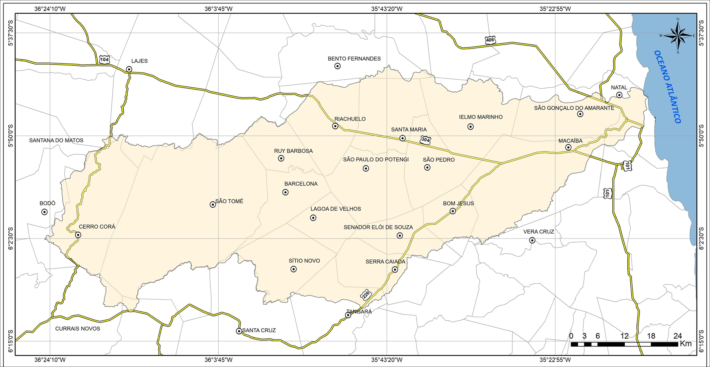

Uma Viagem pela Bacia do Rio Potengi
Descubra como as chuvas transformam o rio da nascente até o mar
Onde chove 2,4x mais ao longo do rio?

Mapa Pluviométrico Interativo
Toque nas regiões e compare o volume de chuvas
Explorar MapaSimulador de Chuvas
1.450
mm/ano
Manguezal cheio • 2,4x mais chuva